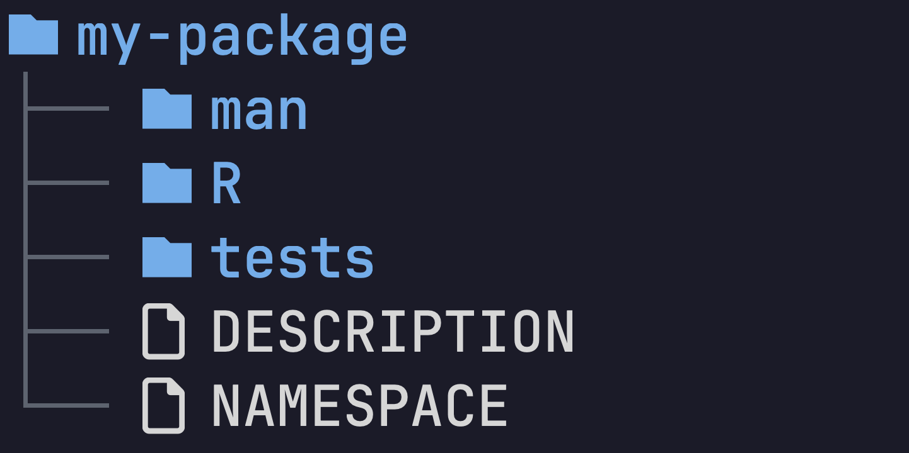
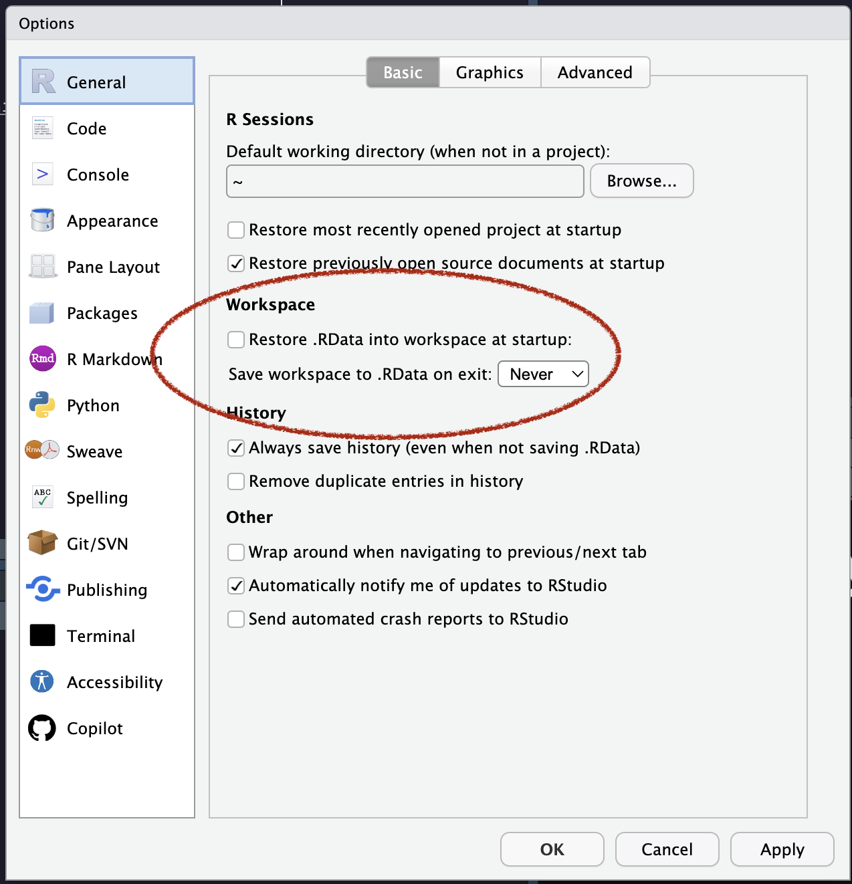
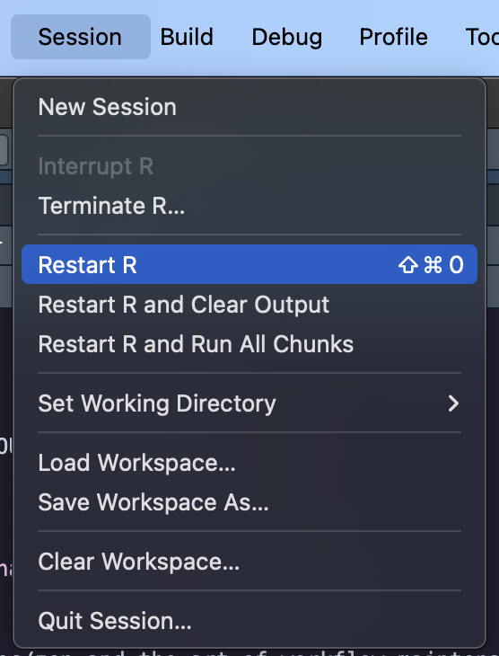
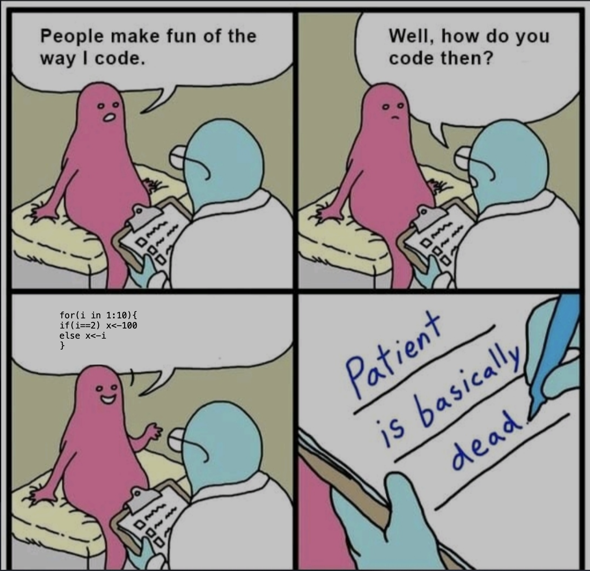

R packages: What, Why and How?
2024-08-06
What
- R packages are the fundamental units of reproducible R code1
- They bundle together code, data, documentation, and tests, and are easy to share with others

But Why?
- Code sharing / reproducibility
- Convenience
- Conventions, good practices
- It makes you look really cool
How
What if I told you you can create an R package
in just 10 minutes
🤯
{devtools} to the rescue
library(devtools)
create_package("~/htahackathon2024/stringsplitter")
use_git()
use_r("split-string.R")- Set up package structure
- Set up version control
- Add our first function
Add our first function
🏎️ Test drive
check()
#> ... (output truncated) ...
#> ── R CMD check ────────────────────────────────────────────────────────────────────────────────────────────────────────────────────────────────────────────────────────────────────────────
#> ✔ checking DESCRIPTION meta-information ...
#> ✔ checking R files for syntax errors ...
#> ✔ checking whether the package can be loaded ...
#> ✔ checking R code for possible problems (1.3s)
#> ✔ checking examples ...
#>
#>
#> ── R CMD check results ────────────────────────────────────────────────────────────────────────────────────────────────────────────────────────────────────────── stringsplitter 0.0.1 ────
#>
#> 0 errors ✔ | 0 warnings ✔ | 0 notes ✔🏎️ Test drive
RStudio keyboard shortcuts
Shift + Ctrl/Cmd + Lto load allShift + Ctrl/Cmd + Eto run checks :::
📝 Add documentation
Write some documentation in roxygen format for your new function
Tip
In RStudio, go to Code -> Insert Roxygen skeleton to make your life easier
📝 Document your function
📝 Document your function
R/split-string.R
#' Split a string into a vector of strings
#'
#' @param x a character string to be split
#' @param sep the separator on which to split
#'
#' @return a vector of strings
#' @export
#'
#' @examples
#' splitstring("alfa,bravo,charlie")
#' splitstring("alfa,bravo charlie", sep = " ")
splitstring <- function(x, sep = ",") {
strsplit(x, split = sep)[[1]]
}Generate the help pages by running document()
or Ctrl/Cmd + Shift + D in RStudio
📝 Make splitstring() available
R/split-string.R
#' Split a string into a vector of strings
#'
#' @param x a character string to be split
#' @param sep the separator on which to split
#'
#' @return a vector of strings
#' @export
#'
#' @examples
#' splitstring("alfa,bravo,charlie")
#' splitstring("alfa,bravo charlie", sep = " ")
splitstring <- function(x, sep = ",") {
strsplit(x, split = sep)[[1]]
}document() will update the NAMESPACE file for us
📦 Build and install
install()
#> ── R CMD build ────────────────────────────────────────────────────────────────────────────────────────────────────────────────────────────────────────────────────────────────────────────
#> ✔ checking for file ‘/Users/milan/htahackathon2024/stringsplitter/DESCRIPTION’ ...
#> ─ preparing ‘stringsplitter’:
#> ✔ checking DESCRIPTION meta-information ...
#> ─ checking for LF line-endings in source and make files and shell scripts
#> ─ checking for empty or unneeded directories
#> ─ building ‘stringsplitter_0.0.1.tar.gz’
#>
#> ... output truncated ...
#>
#> ** testing if installed package can be loaded from temporary location
#> ** testing if installed package can be loaded from final location
#> ** testing if installed package keeps a record of temporary installation path
#> * DONE (stringsplitter)Some Good Practices
One of the things research programmers struggle with is the transition from exploration to infrastructure, i.e., from “coding to figure out what the problem is” to “I’m building a reusable tool”. Habits from the first are often carried over to the second.
– Tweet from Greg Wilson 2018
Don’t trust rm(list = ls())
Restart your R session regularly



Don’t do setwd()
Use a project-oriented workflow instead
Advanced topics
Debugging
Code formatting
Because readability is important
Do’s and don’ts
# Don’t do this
if(x<100){
y<-200}
# Do this instead
if (x < 100) {
y <- 200
}
# NEVER use the shorthand versions of TRUE and FALSE
# Why? This is why:
1T <- FALSE # this is valid R code- 1
- If you really want to mess with someone’s R code, see evil.R
Resources
- R Packages by Hadley Wickham and Jenny Bryan – The Golden Standard
- What They Forgot to Teach You About R by Jenny Bryan
- Tidyverse style guide
- “Better packages” presentation by Maëlle Salmon
- Advanced R by Hadley Wickham
R packages: What, Why and How?